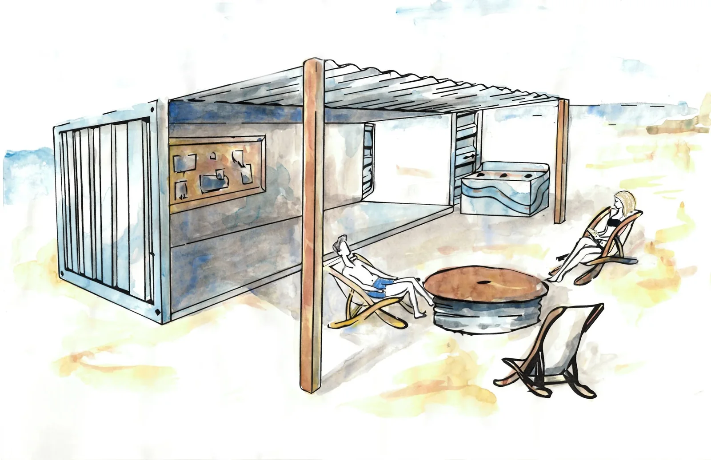
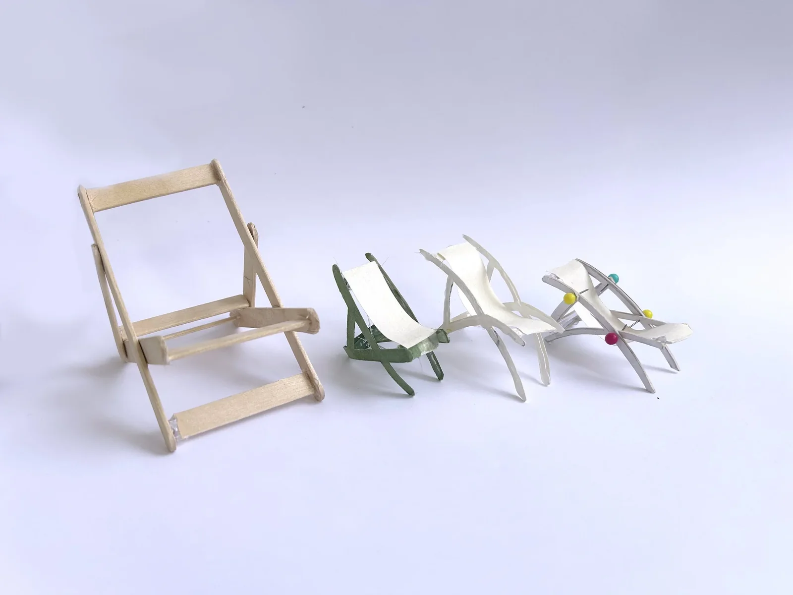
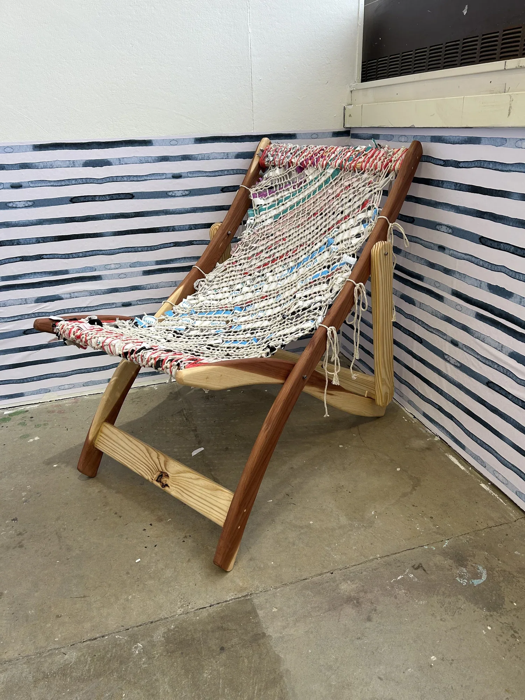
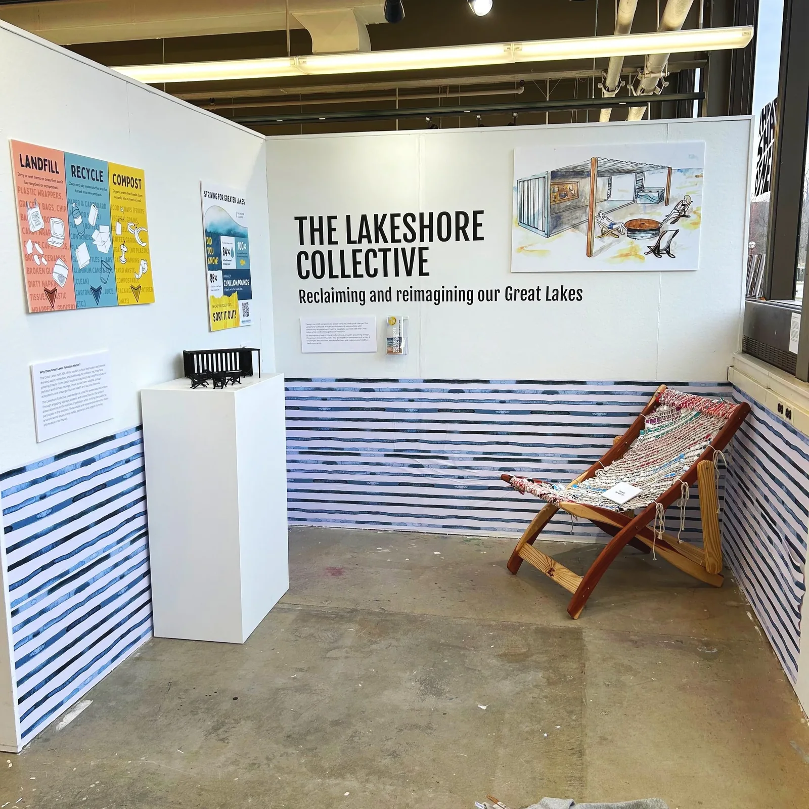

A speculative design proposal for a multifunctional community space along the Great Lakes shoreline, exploring how design can promote environmental stewardship and local connection.

The Lakeshore Collective — turning environmental awareness into interaction.
Environmental damage to the Great Lakes has become normalized, and that normalization makes it hard for awareness alone to drive any meaningful action. People know, but knowing hasn't been enough to change behavior.
The challenge was to design an experience that moves people beyond passive concern, encouraging reflection, responsibility, and real behavioral change, rather than just adding more information to a problem people had already learned to tune out.
Inspired by community-driven spaces like Reffen in Copenhagen, I developed a concept for an interactive lakeshore environment that blends public gathering, education, and sustainability. The system integrates spatial design, material reuse, and environmental storytelling into a space that is both functional and reflective, turning a message about the lakes into something you experience rather than something you're told.
Designed for interaction over information, prioritizing emotional engagement rather than passive education.
Used waste materials as both medium and message, reinforcing sustainability through the physical experience.
Structured the space as a modular system, adaptable across different shoreline contexts.
Combined discursive and functional elements to balance usability with storytelling.


The proposal came together as a fully prototyped chair built from collected shoreline waste, a system of environmental signage and educational materials, and spatial renderings for a modular lakeshore community hub. Together they demonstrate a scalable approach that municipalities could use to promote sustainability and community engagement along their own shorelines.
At its core, the project transforms environmental awareness into interaction, using reclaimed materials, spatial systems, and storytelling to turn passive concern into reflection, responsibility, and a reason to gather.
